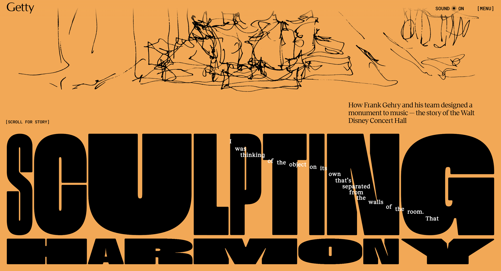

Gehry Getty Website Evaluation
- Frank Gehry's Getty Museum
Sculpting Harmony
This is a web museum dedicated to showcasing Frank Gehry and his team's work to crafting Waltz Disney's Concert Hall 
What was the first thing you paid attention to when interacting with the experience?
Upon first interacting with the Gehry Getty website, I was immediately engaged by the dynamic narrative progression through scrolling. Users explore vertically to enjoy through the scroll triggered animations, gradually revealing content in a fluid and immersive approach. This technique, known as the parallax effect, creates a sense of depth, allowing users to feel as though they are actively moving through Frank Gehry’s exhibition. The seamless transitions between sections of the website, accompanied by the dynamic resizing and reshaping of typography, further enhance the immersive experience. The exhibition is structured into distinct chapters, each featuring an array of videos, images, and models, all meticulously organized and introduced by partition slides displaying titles and initial sketches of Gehry’s work. Another key aspect linked to the scroll driven movement was the interactive control elements. Images, models, and textual components enthusiastically respond to the mouse movements, adding an engaging, tactile dimension to the experience.Spend two minutes with the experience and create a list of each of your discrete actions.
When I first accessed the website, I was welcomed by a simple introduction along with instructions to click anywhere to enable the audio-visual experience. Once the audio began, the project title, "Sculpturing Memory," appeared in bold typography.
Following the on-screen prompt, "scroll for story," I attempted to scroll. As I hovered over the centre of the page, messages followed my mouse trail, describing the team’s passion for music and its influence on people.
From the title slide, I scrolled down to see Frank Gehry’s final project. The experience became more immersive as users were zoomed into a 360-degree exterior view of the Walt Disney Concert Hall, with a visual narration guiding them along the way. Scrolling further, I reached Chapter 1, where a video of Gehry explaining his team’s innovative design process played, accompanied by images and videos showcasing the project's various uses and early concepts that shaped the concert hall.
Since my focus was on analysing the website rather than the story of Disney’s Concert Hall, I clicked through the videos to skim through the broader information. On the bottom right corner, I noticed a button labelled "Explore the Model," which allowed users to interact with a 360-degree 3D prototype of the concert hall.
The main page felt concise and well-organized, with additional information neatly tucked into a [Read More] section to prevent information overload. Throughout Chapters 1, 2, and 3, the visual style remained consistent, maintaining an elegant and structured design.
Navigating the website was straightforward, relying primarily on scrolling. While searching for additional details, the cleanly structured navigation bar caught my attention. It featured three key elements:
1. The title – Getty, which, when clicked, refreshed the page and returned it to the top.
2. A sound toggle button, allowing users to switch the background music on or off.
3. A menu bar for easy navigation.
Beyond its visual and interactive appeal, the website also integrates audio elements, enhancing the immersive experience. Given that the featured project is the Walt Disney Concert Hall, the site subtly plays classical music in the background, reinforcing the ambiance of a real gallery. The non-intrusive, atmospheric soundtrack seamlessly complements the content, adding to the museum-like experience.
What part of the experience did you spend the most time engaging with?

Title
Some text here.
More text in a new section.
The part that I most interacted with throughout the website was the 3D model view. Personally, I think that employing a 360 model of Gehry’s concert hall was the cleverest way of showcasing an architectural project. It enhanced the overall user engagement as it encourages us to click and drag and control our own view. The key aspect of the website, parallax effect, and the 360-degree view, both are correlating movement as they make the user feel as if they are moving through or around the content.
What was the most common action in your two minute interaction with the experience?
The most common action I took to examine through the website was scrolling. Other actions such as clicking or dragging were unnecessary to scheme through the main page. Clicking and dragging was only necessary to look deeper into the contents.
What is your impression of the intended primary goal of the interactive experience?
The primary goal of this website seems to be informing. To educate, inspire and entertain the users about Gehry’s design journey to build Disney’s concert hall. Personally, the very well organised layout of the webpage made the comprehension of the information easier.
How does the interactive experience communicate this primary goal?
Instead of exhibiting the whole content on one page and overloading the users with information, each chapter of information is divided into categories that unfold as users scroll. This helps users to consume information portion by portion.
How does the interactive experience communicate this primary goal?
The website guides users clearly from the start by showing a message to click anywhere to begin the audio-visual experience. It then uses simple instructions like “scroll for story” to show that scrolling guides users forward.
As you scroll, animations, text, and images appear gradually, teaching you how the site works through use. Hover effects and clickable text highlights invite interaction, while buttons like “Explore the Model” show where deeper content is available.
What other media forms does the experience reference?
There are interviews and background music that makes the website resemble documentary format. Architectural models that appear to be made by cardboards and hand-drawn initial sketches is referencing Gehry’s traditional tools for communicating ideas.
What does this reference/s communicate to you about how you should act when engaging with your research experience?
These references along with the key features of the website suggest that engaging with the website should approached like visiting a gallery. They trigger the user’s sense of curiosity, attention to detail and a willingness to explore. The use of documentary style storytelling and interactive design encourages users to take time to follow the narrative, listen and view the medias embedded.
What does this reference/s communicate to you about how you should feel when engaging with your research experience?
The references such as the gallery like storytelling, mixed media and models and sketches makes me feel engaged and inspired. Just like how people look at the art first then read the artist statements in a gallery, users are faced with interviews, and other medias then it leads them to take interest further into the story leading them to read the explanations.
What is the most frustrating part of the interaction to you and what makes that part frustrating?
The most frustrating part of the interaction happened to be the webpage’s strongest element, scrolling. The scroll-based navigation sometimes felt too sensitive or inconsistent. It was easy to skip over content or it just felt like it was breaking the smooth experience. This was noticeable when I scrolled through the exterior image of the concert hall, whilst also trying to read through the text that popped up through the timing of the scrolling.
What is the most satisfying part of the interaction to you and what makes that part satisfying?
Surprisingly, I felt that the typography was comfortable to read even with the strong animations. I could identify three main typographies.
Title
Some text here.
More text in a new section.
Thank you for reading.